Soru 1Cevap: B
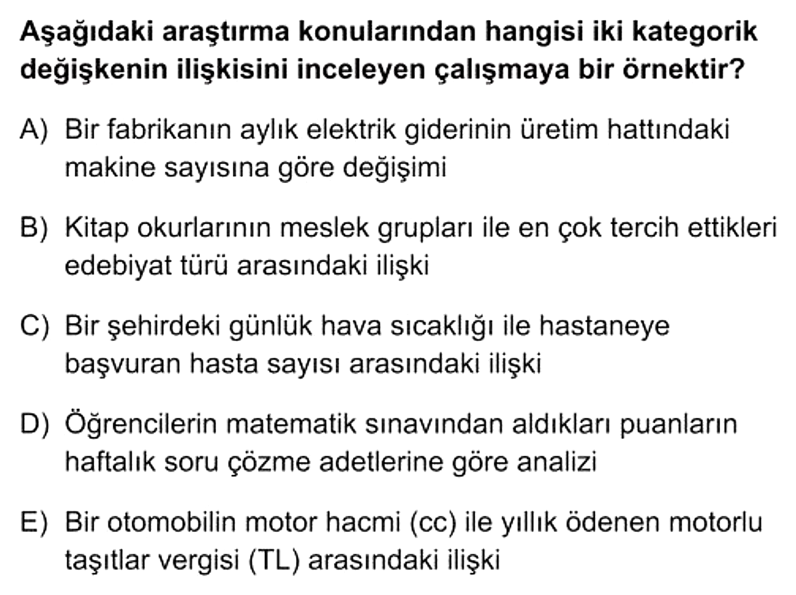
Çözüm
- Elektrik gideri, makine sayısı, sıcaklık, hasta sayısı, puan, soru adedi, motor hacmi ve vergi nicel değişkenlerdir.
- Meslek grubu ve edebiyat türü ikisi de kategoriktir.
- İki kategorik değişkenli çalışma B'dir.
Cevap: B
Soru 2Cevap: C
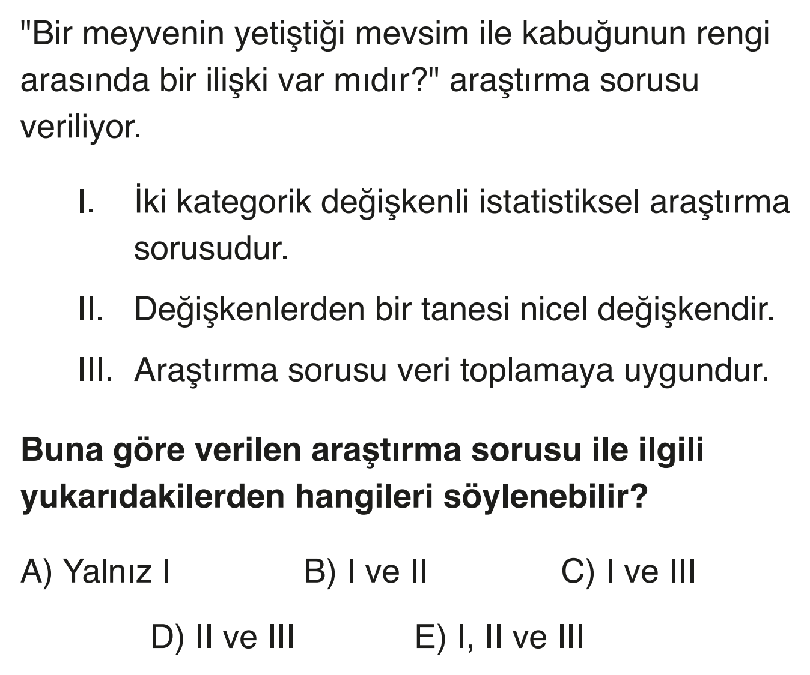
Çözüm
- Mevsim ve kabuk rengi ikisi de kategoriktir → I doğru, II yanlış.
- Meyvelerin mevsimi ve rengi gözlemle kaydedilebilir → veri toplanabilir (III).
- Cevap: I ve III.
Cevap: C
Soru 3Cevap: D
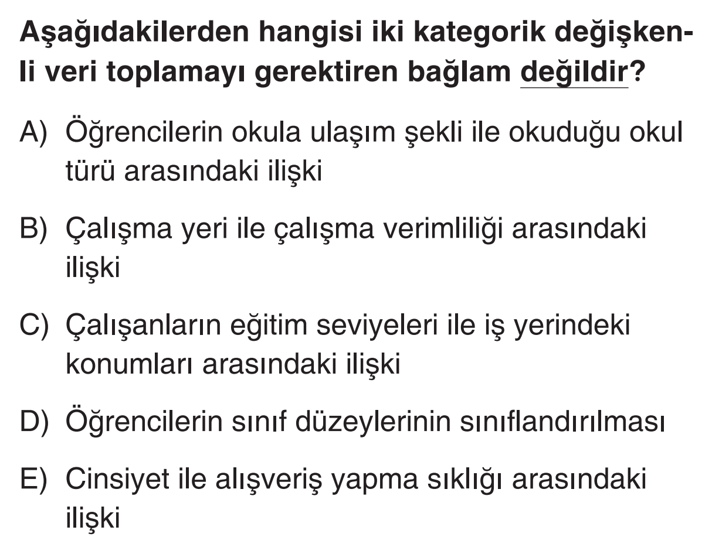
Çözüm
- A, B, C ve E'de iki değişken arasındaki ilişki sorgulanır.
- D yalnızca sınıf düzeylerinin sınıflandırılmasıdır; tek değişken vardır, ilişki yoktur.
- İki kategorik değişkenli bağlam olmayan → D.
Cevap: D
Soru 4Cevap: D
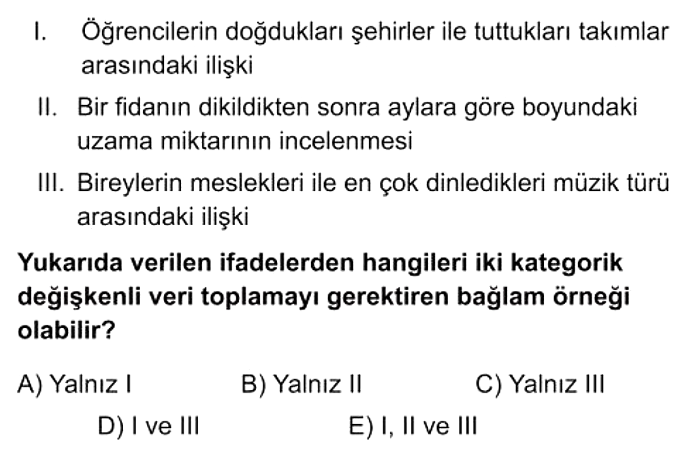
Çözüm
- I: doğulan şehir ve tutulan takım kategoriktir.
- II: boy uzama miktarı nicel bir değişkendir.
- III: meslek ve müzik türü kategoriktir. Cevap: I ve III.
Cevap: D
Soru 5Cevap: E
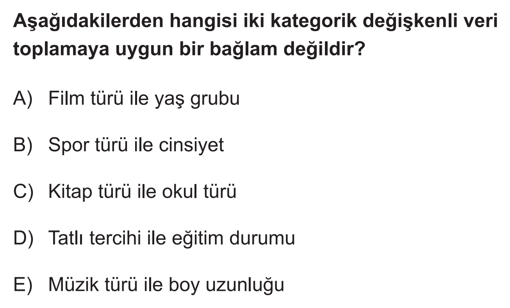
Çözüm
- Film türü–yaş grubu, spor türü–cinsiyet, kitap türü–okul türü, tatlı–eğitim durumu ikişer kategoriktir.
- Boy uzunluğu ise ölçülen nicel bir değişkendir.
- Uygun olmayan bağlam → E.
Cevap: E
Soru 6Cevap: C
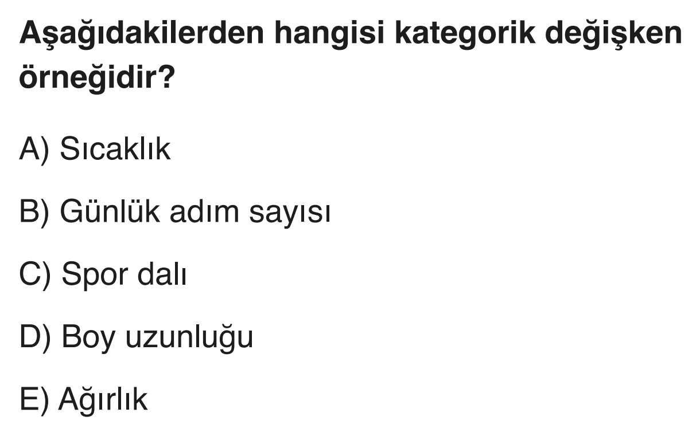
Çözüm
- Sıcaklık, adım sayısı, boy ve ağırlık sayılarla ifade edilir.
- Spor dalı (futbol, voleybol…) bir gruptur.
- Kategorik değişken → C.
Cevap: C
Soru 7Cevap: C
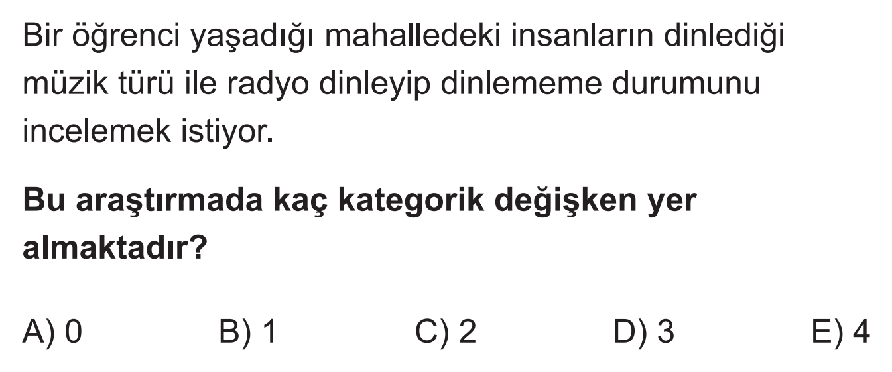
Çözüm
- Araştırmada iki değişken var: dinlenen müzik türü ve radyo dinleme durumu.
- Müzik türü (pop, rock…) ve radyo dinleme (evet/hayır) gruptur.
- Kategorik değişken sayısı 2 → C.
Cevap: C
Soru 8Cevap: D
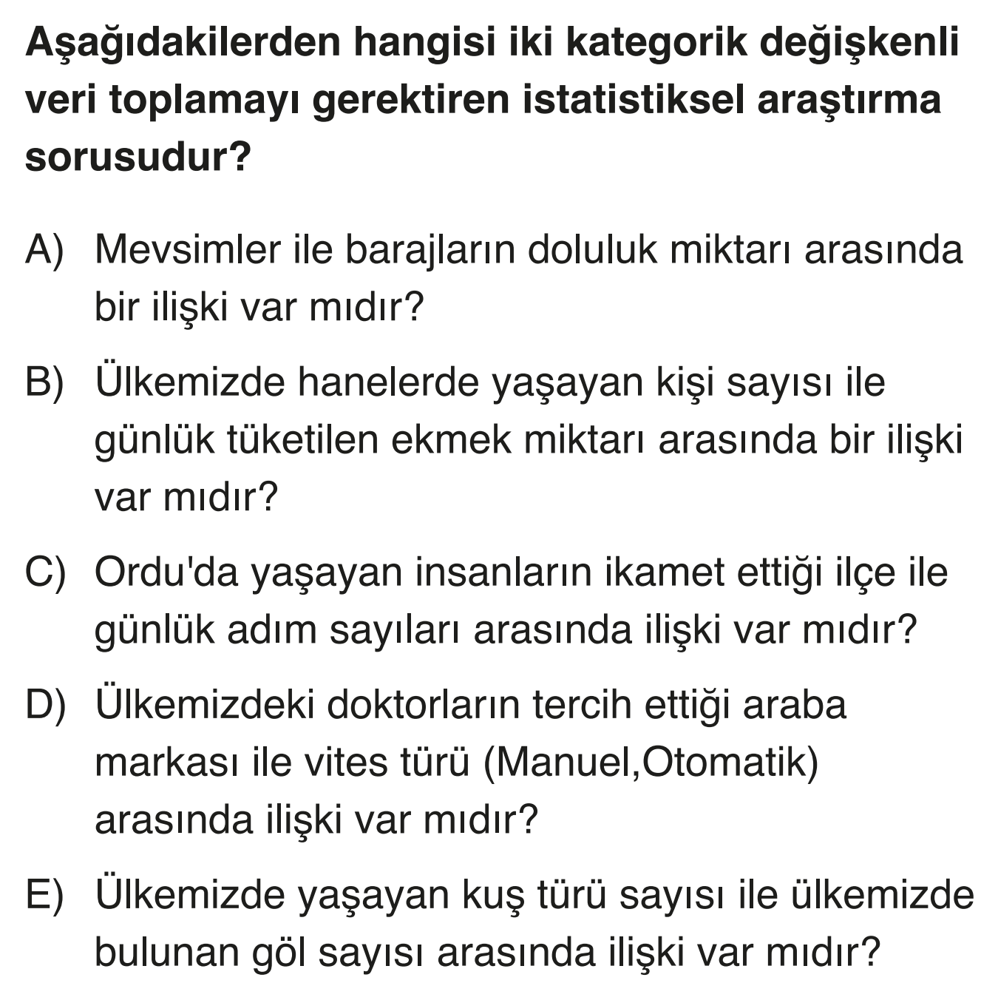
Çözüm
- Doluluk miktarı, kişi sayısı, ekmek miktarı, adım sayısı, kuş türü sayısı ve göl sayısı nicel değişkenlerdir.
- Araba markası ve vites türü ikisi de kategoriktir.
- Uygun araştırma sorusu D'dir.
Cevap: D
Soru 9Cevap: E
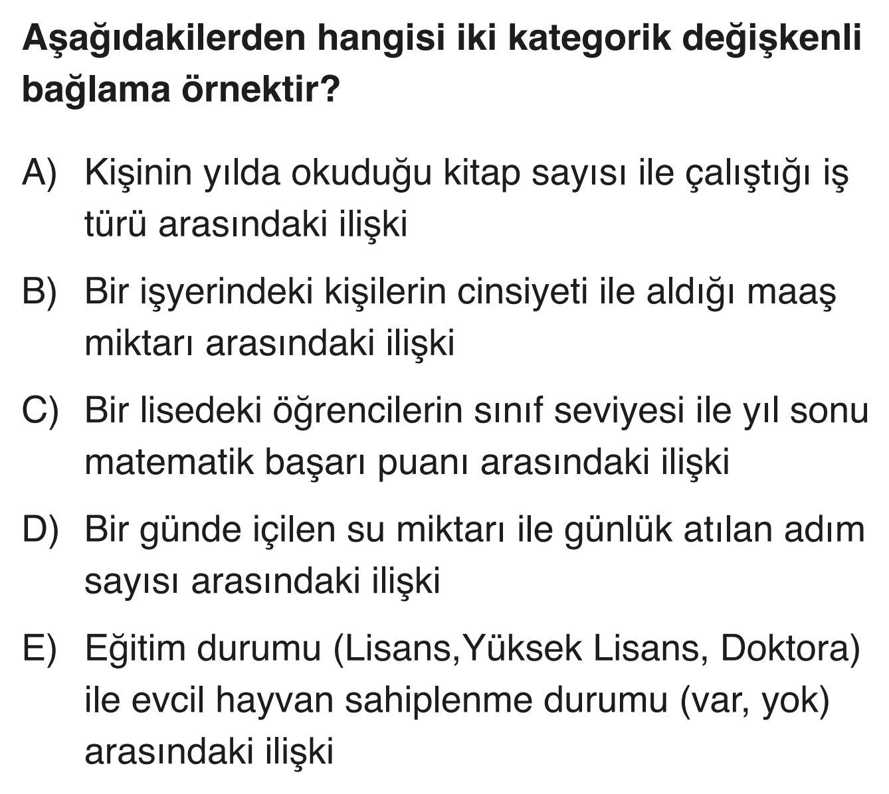
Çözüm
- Kitap sayısı, maaş, puan, su miktarı ve adım sayısı nicel değişkenlerdir.
- Eğitim durumu ve evcil hayvan sahiplenme durumu gruplara ayrılır.
- İki kategorik değişkenli bağlam → E.
Cevap: E
Soru 10Cevap: C
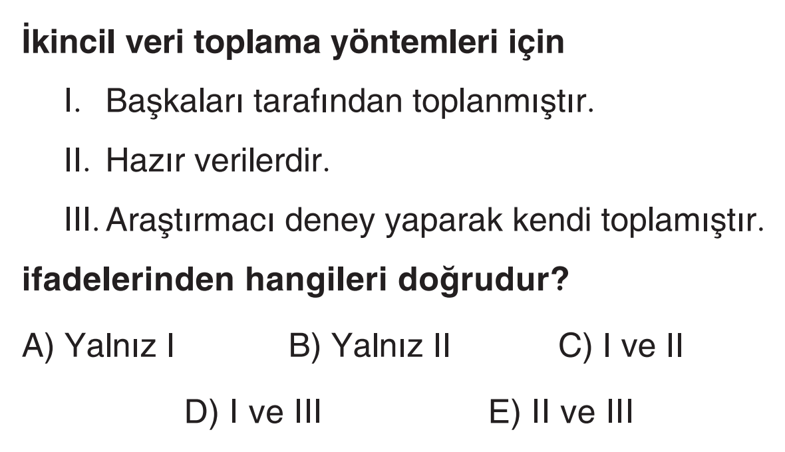
Çözüm
- İkincil veriler başkaları tarafından toplanmıştır (I).
- Araştırmacı için hazır verilerdir (II).
- Kendi deneyiyle toplanan veri birincildir (III yanlış). Cevap: I ve II.
Cevap: C
Soru 11Cevap: E
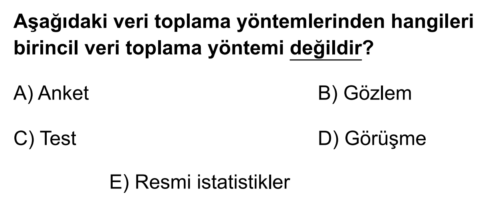
Çözüm
- Anket, gözlem, test ve görüşme araştırmacının kendisinin uyguladığı yöntemlerdir.
- Resmî istatistikler kurumların hazırladığı hazır verilerdir.
- Birincil olmayan → E.
Cevap: E
Soru 12Cevap: C
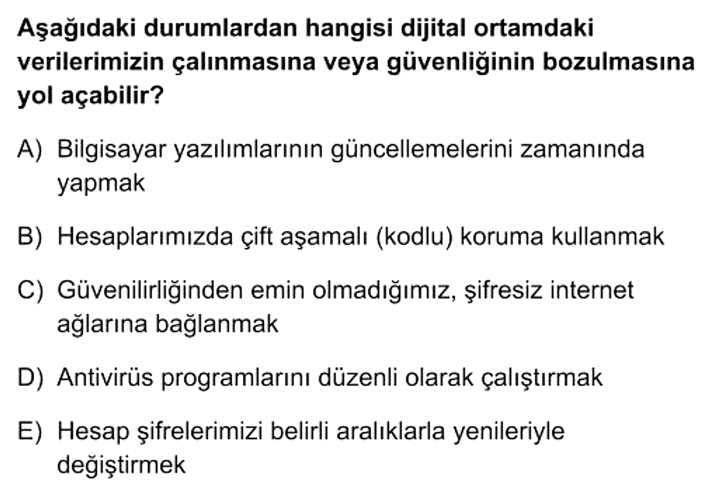
Çözüm
- Güncelleme, çift aşamalı koruma, antivirüs ve şifre yenileme güvenliği artırır.
- Güvenliğinden emin olunmayan şifresiz ağlara bağlanmak verilerin çalınmasına yol açabilir.
- Cevap C.
Cevap: C
Soru 13Cevap: D
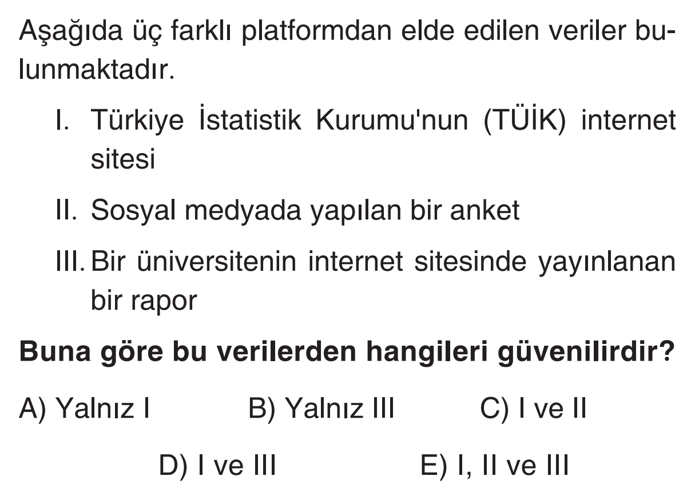
Çözüm
- TÜİK resmî bir kurumdur → güvenilir (I).
- Sosyal medyada yapılan anketin kaynağı ve örneklemi belirsizdir → güvenilir değil (II).
- Üniversitenin yayımladığı rapor akademik kaynaktır → güvenilir (III). Cevap: I ve III.
Cevap: D
Soru 14Cevap: C
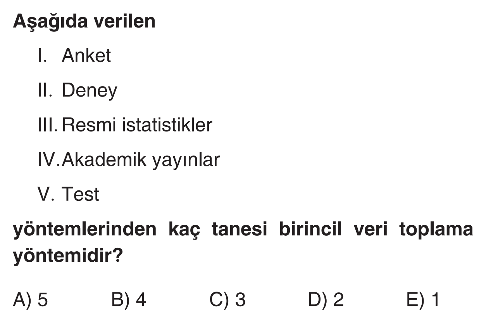
Çözüm
- Birincil yöntemler araştırmacının veriyi kendisinin topladığı yöntemlerdir.
- Anket, deney ve test birincildir.
- Resmî istatistikler ve akademik yayınlar ikincildir. Birincil sayısı 3 → C.
Cevap: C
Soru 15Cevap: B
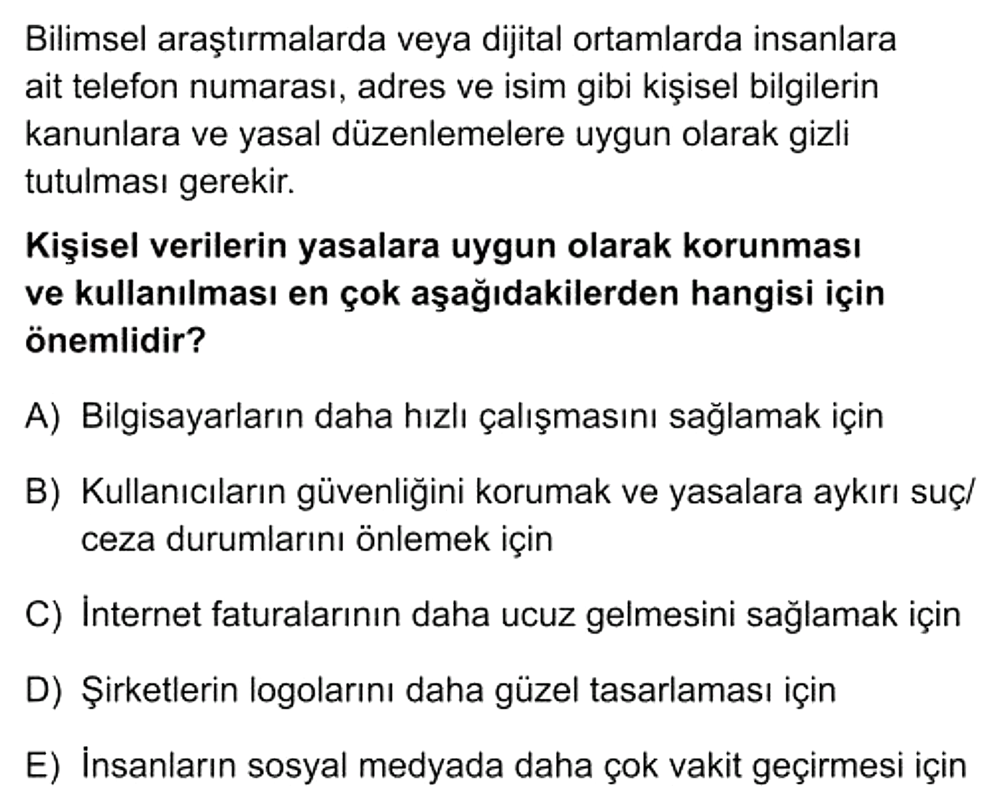
Çözüm
- Kişisel veriler (telefon, adres, isim) kanunlarla korunur.
- Amaç, kişilerin güvenliğini korumak ve yasalara aykırı durumları önlemektir.
- Cevap B.
Cevap: B
Soru 16Cevap: D
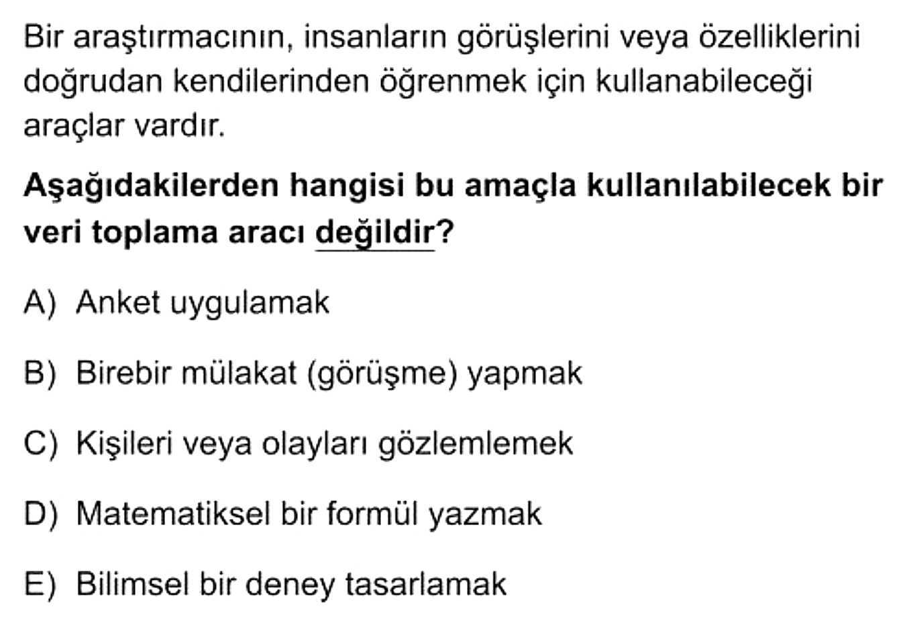
Çözüm
- Anket, mülakat, gözlem ve deney kişilerden ya da olaylardan doğrudan veri toplar.
- Matematiksel bir formül yazmak veri toplama aracı değildir.
- Cevap D.
Cevap: D
Soru 17Cevap: D
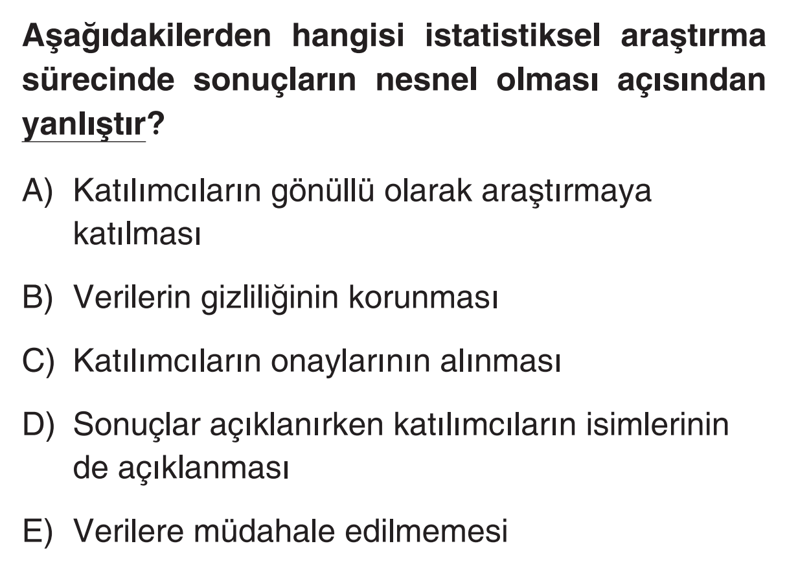
Çözüm
- Gönüllülük, gizlilik, onay alma ve verilere müdahale etmeme nesnelliği ve etiği sağlar.
- Katılımcıların isimlerinin açıklanması gizliliği ihlal eder.
- Yanlış olan → D.
Cevap: D
Soru 18Cevap: C
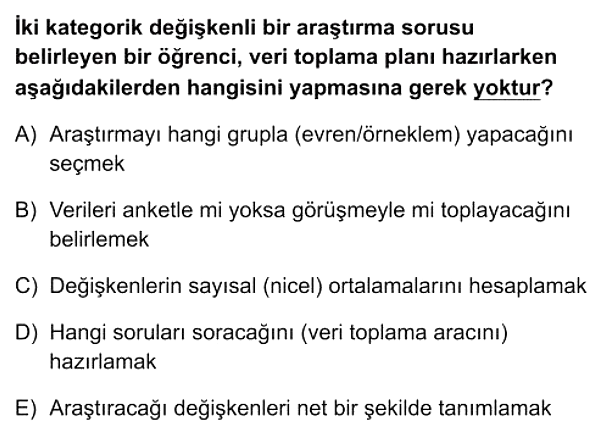
Çözüm
- Evren–örneklem, veri toplama yöntemi, sorular ve değişkenlerin tanımı planın parçasıdır.
- Kategorik değişkenlerin sayısal ortalaması hesaplanmaz.
- Gerek olmayan → C.
Cevap: C
Soru 19Cevap: E
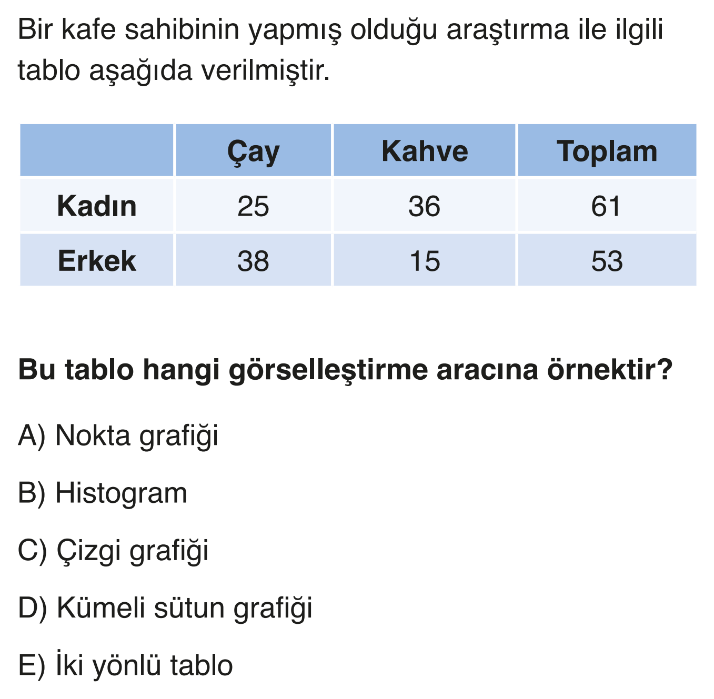
Çözüm
- Tabloda cinsiyet (satırlar) ve içecek tercihi (sütunlar) birlikte gösterilmiş.
- Hücrelerde iki kategorinin kesiştiği sıklıklar yazılıdır.
- Bu bir iki yönlü (çapraz) tablodur → E.
Cevap: E
Soru 20Cevap: D
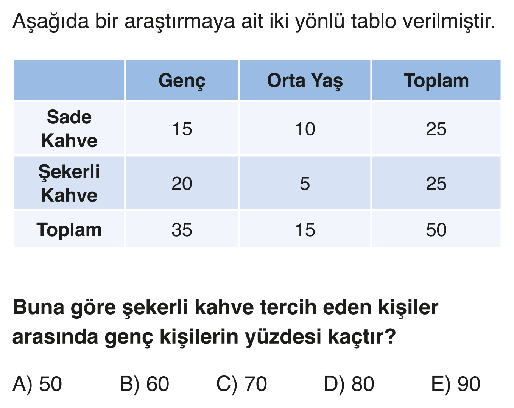
Çözüm
- Şekerli kahve tercih eden toplam 25 kişidir.
- Bunlardan 20'si gençtir.
- 20/25 = %80 → D.
Cevap: D
Soru 21Cevap: D
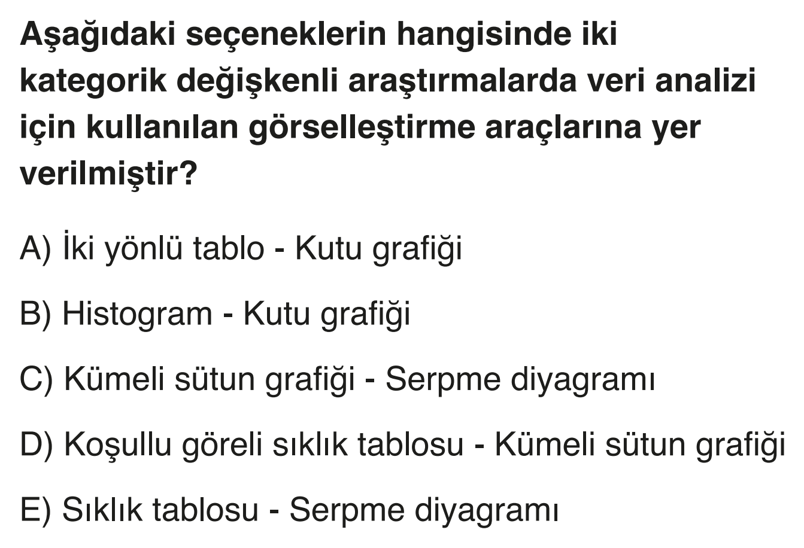
Çözüm
- Histogram, kutu grafiği ve serpme diyagramı nicel veriler içindir.
- İki kategorik değişkenin analizinde iki yönlü tablo, koşullu göreli sıklık tablosu ve kümeli sütun grafiği kullanılır.
- İkisi de uygun olan seçenek D'dir.
Cevap: D
Soru 22Cevap: C
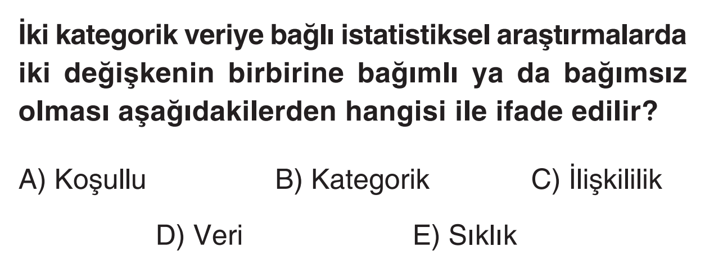
Çözüm
- İki değişkenin birbirine bağımlı ya da bağımsız olması inceleniyor.
- Bu durumu anlatan terim ilişkililiktir.
- Cevap C.
Cevap: C
Soru 23Cevap: D
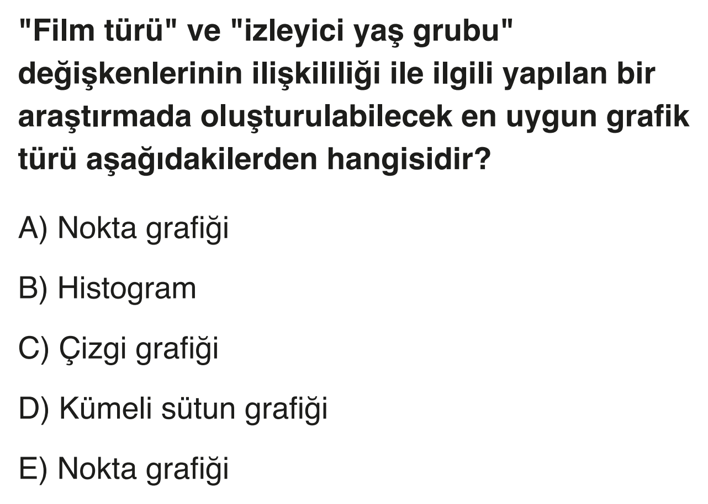
Çözüm
- Film türü ve izleyici yaş grubu iki kategorik değişkendir.
- Nokta grafiği, histogram ve çizgi grafiği nicel veriler içindir.
- En uygun grafik kümeli sütun grafiğidir → D.
Cevap: D
Soru 24Cevap: A
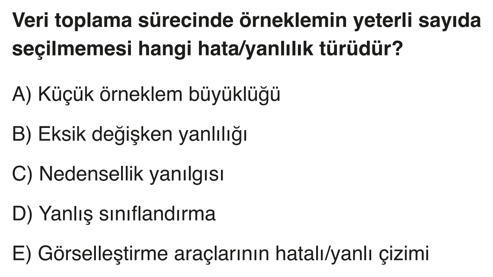
Çözüm
- Örneklemin yeterli sayıda seçilmemesi sonuçların güvenilirliğini azaltır.
- Bu hataya küçük örneklem büyüklüğü denir.
- Cevap A.
Cevap: A
Soru 25Cevap: E
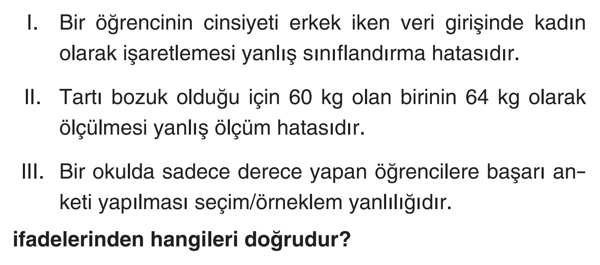
A)Yalnız IB)I ve IIC)I ve IIID)II ve IIIE)I, II ve III
Çözüm
- Erkeğin kadın olarak işaretlenmesi yanlış sınıflandırmadır (I doğru).
- Bozuk tartı ile ölçüm yanlış ölçüm hatasıdır (II doğru).
- Yalnız derece yapan öğrencilere anket uygulamak seçim yanlılığıdır (III doğru). Cevap E.
Cevap: E
Soru 26Cevap: D
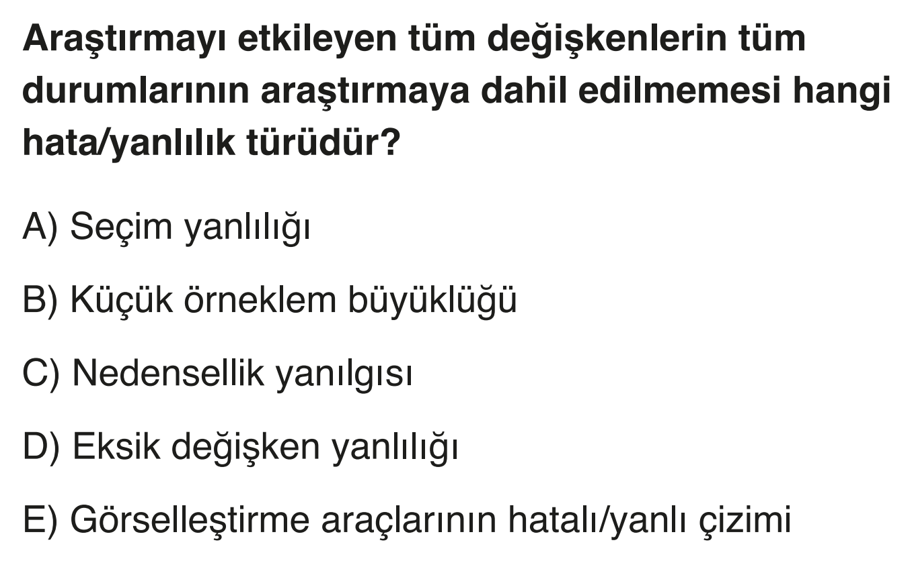
Çözüm
- Araştırmayı etkileyen değişkenlerin ya da kategorilerin bir kısmı dışarıda bırakılmıştır.
- Bu durum sonuçları eksik ve yanıltıcı yapar.
- Hata türü: eksik değişken yanlılığı → D.
Cevap: D
Soru 27Cevap: C
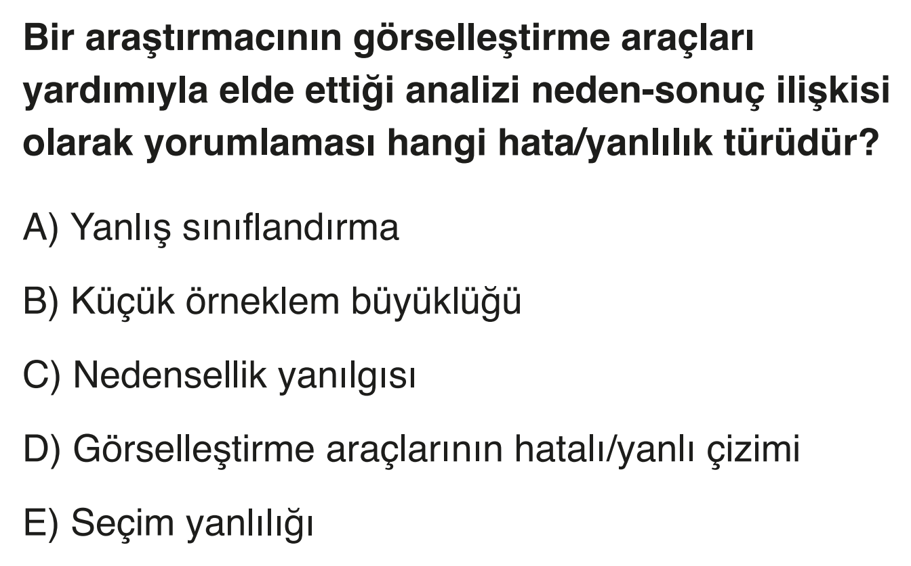
Çözüm
- Görselleştirme araçları yalnızca değişkenler arasındaki ilişkiyi gösterir.
- Bu ilişkiyi neden–sonuç olarak yorumlamak bir hatadır.
- Hata türü: nedensellik yanılgısı → C.
Cevap: C
Soru 28Cevap: D
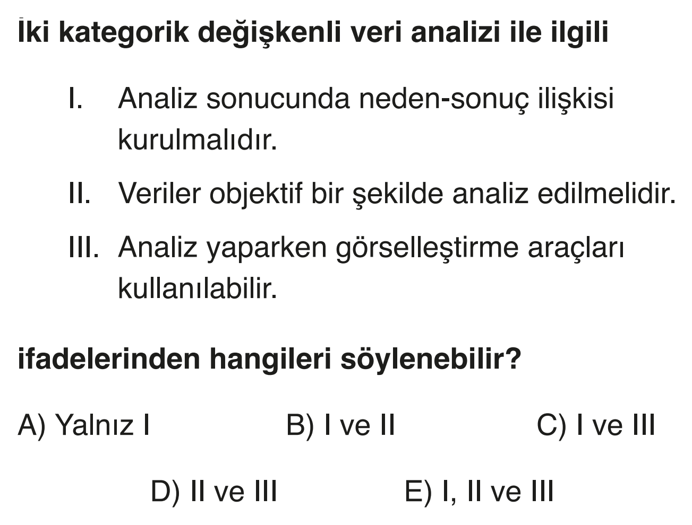
Çözüm
- İki kategorik değişkenli analiz yalnızca ilişkinin varlığını gösterir; neden–sonuç kurulmaz (I yanlış).
- Veriler objektif analiz edilmelidir (II doğru).
- Analizde görselleştirme araçları kullanılabilir (III doğru). Cevap: II ve III.
Cevap: D
Soru 29Cevap: B
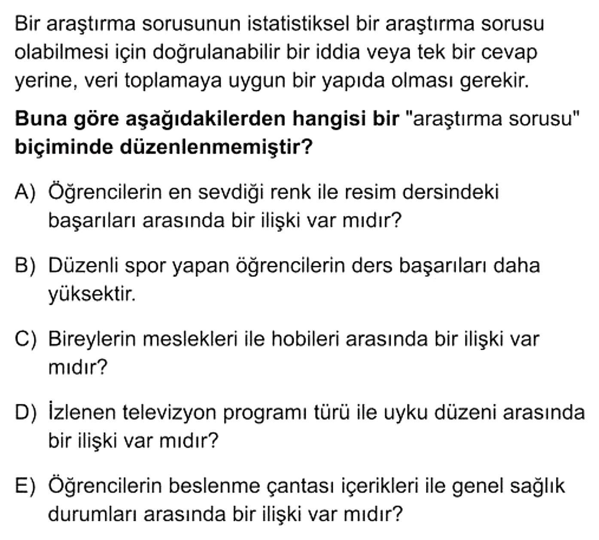
Çözüm
- Araştırma sorusu "…arasında bir ilişki var mıdır?" biçiminde, veri toplamaya açık bir soru olmalıdır.
- A, C, D ve E bu biçimdedir.
- B bir iddia (yargı) cümlesidir; soru biçiminde değildir → B.
Cevap: B
Soru 30Cevap: C
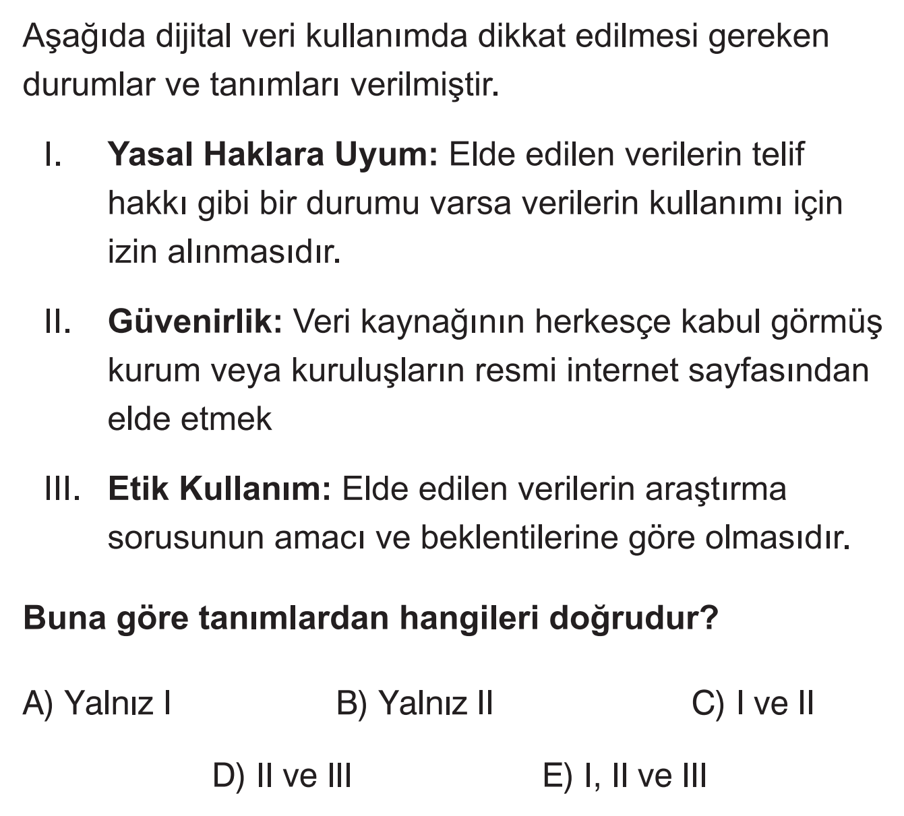
Çözüm
- Yasal haklara uyum: telif gibi haklar için izin alınması (I doğru).
- Güvenilirlik: verinin kabul görmüş kurumların resmî sayfalarından alınması (II doğru).
- III'teki tanım etik kullanımı değil, verilerin uygunluğunu anlatır (III yanlış). Cevap: I ve II.
Cevap: C